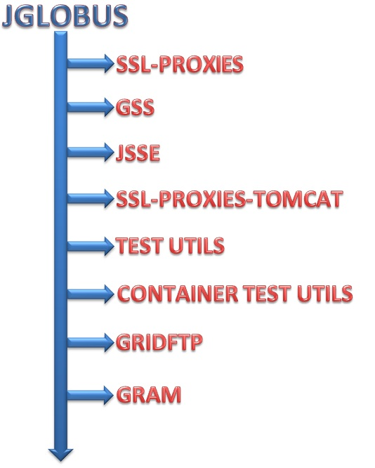

jGlobus 2.0.1 Core (download) is a bug-fix release that addresses an issue with signature verification.
This issue was discovered and addresses by Jonathan Siwek at NCSA. Details of this fix can be found here.
jGlobus 2.0.0 (download) replaces the use of pureTLS, as was used in jGlobus 1.x, with JSSE. While this resulted in minor changes to the GSI API, the GRAM and GridFTP packages remain unchanged from jGlobus 1.X. A secondary goal was to drop or deprecated packages that are not strictly related to the use of Globus Toolkit. This includes, for example, the removal of the MDS package, as MDS is no longer supported in Globus Toolkit 5.X. Finally, jGlobus now requires Java 1.5 or higher.

Each table lists the package name, current usage in the library, and the class status in the new library. Last column provides internal notes on port to new library.
| Class name | Use in current library | Status | Comments for new library port |
|---|---|---|---|
| ChainedCertificateException | Used in org.globus.gsi.bc.BouncyCastleUtil. | Deprecate | Ported Deprecated |
| ChainedException | Relict from Java 1.3- where there were no chained exceptions (Throwable with a Throwable as cause). Used in many packages: org.globus.gatekeeper, org.globus.gram, org.globus.gsi, org.globus.io, org.globus.mds, org.globus.myproxy. | Deprecate | Ported Deprecated |
| ChainedGeneralSecurityException | Used in org.globus.common, org.globus.proxy and org.globus.ptls. | Deprecate | Ported Deprecated |
| ChainedIOException | Used in many packages: org.globus.gsi, org.globus.io.streams, org.globus.net. | Deprecate | Ported. Java 1.5 does not support chained IOExceptions, but Java 1.6 does. Ported and not deprecated for now. |
| CoGProperties | Responsible for managing the properties file ~/.globus/cog.properties, which holds information about various properties needed by the security classes. These properties include:
|
Port | Ported. Removed deprecated and MDS-related methods. |
| ConditionVariable | Unused. | Discontinue. | Removed |
| ConstrainedMVHashtable | Unused. | Discontinue | Removed |
| MVHashtable | Used in org.globus.mds. | Discontinue | Removed |
| ResourceManagerContact | Used in org.globus.gram.Gram. | Port | Ported. Should be moved into org.globus.gram. |
| Version | Version information of the JGlobus module, composed as MAJOR.MINOR.PATCH. | Port | Ported |
| Class name | Use in current library | Status | Comments for new library port |
|---|---|---|---|
| CertificateRevocationLists | Used in org.globus.gsi.GlobusCredential, org.globus.gsi.gssapi.GlobusGSSContextImpl, org.globus.gsi.proxy.ProxyPathValidator | Deprecate | Ported. Deprecated. Has been refactored to use a CertStore from the GlobusProvider. |
| CertUtil | Used a lot in org.globus.gsi and sub-packages, and org.globus.tools | Deprecate | Ported. Deprecated. Has been refactored to use the new certificate utils org.globus.gsi.util.CertificateIOUtil,
org.globus.gsi.util.CertificateLoadUtil,
org.globus.gsi.util.CertificateUtil,
org.globus.gsi.util.ProxyCertificateUtil. These new utility classes should be used instead. |
| GSIConstants | Used all over the place. | Port | Ported. Deprecated proxy type and delegation mode integer constants, and added enums CredentialType and DelegationType. |
| GlobusCredential | Used in org.globus.gsi, org.globus.myproxy, org.globus.tools | Deprecate | Ported. Deprecated. Has been refactored to use X509Credential internally. X509Credential should be used instead. |
| GlobusCredentialException | Only in org.globus.gsi.GlobusCredential and org.globus.gsi.gssapi.GlobusGSSManagerImpl | Deprecate | Ported. Deprecated. |
| OldCertUtil | Not used. | Discontinue | Removed |
| OpenSSLKey | Used in org.globus.gsi, org.globus.gsi.bc, org.globus.myproxy, org.globus.tools | Port | Ported. |
| SigningPolicy | Used in org.globus.gsi.TrustedCertificates, org.globus.gsi.proxy.ProxyPathValidator, org.globus.gsi.ptls.PureTLSTrustedCertificates and tests | Port | Ported. Has been replaced by a new SigningPolicy class, which is not backwards-compatible to the old one. |
| SigningPolicyParser | Used in org.globus.gsi.SigningPolicy and org.globus.gsi.TrustedCertificates and tests. | Deprecate. | Ported. Has been replaced by a new SigningPolicyParser which is not backwards-compatible to the old one. |
| SigningPolicyParserException | Used in org.globus.gsi.SigningPolicy and org.globus.gsi.TrustedCertificates and tests. | Discontinue | Has been replaced by org.globus.security.SigningPolicyException |
| TrustedCertificates | Used in org.globus.gsi and sub-packages and org.globus.tools | Deprecate | Ported. Deprecated. Has been refactored to use a KeyStore from the GlobusProvider. |
| X509Extension | Used in org.globus.gsi and sub-packages and org.globus.tools | Port | Ported. Maybe move to using BC API. (org.bouncycastle.asn1.x509.X509Extension). |
| X509ExtensionSet | Used in org.globus.gsi, org.globus.gsi.bc and org.globus.tools | Port | Ported. |
Check if we can use BouncyCastle features directly, instead of providing BouncyCastle utils.
Used in org.globus.gsi, org.globus.myproxy, org.globus.tools
| Class name | Use in current library | Status | Comments for new library port |
|---|---|---|---|
| BouncyCastleCertProcessingFactory | Used in org.globus.gsi.bc, org.globus.gsi.gssapi, org.globus.myproxy, org.globus.tools | Port | Ported. Removed deprecated methods. Not backwards-compatible: Instead of an integer variable, a CertificateType enum is expected in various methods. |
| BouncyCastleOpenSSLKey | Port | Ported. Overwritten with new class from crux-security-core (org.globus.security.bc.BouncyCastleOpenSSLKey) (same functionality) | |
| BouncyCastleUtil | Port | Ported. Not backwards-compatible: removed methods getCertificateType(...) that took a TBSCertificateStructure as parameter. Methods getCertificateType(...) return a CredentialType enum instead of an integer. | |
| BouncyCastleX509Extension | Used in org.globus.gsi.proxy.ext and a test | Port | Ported. Seems useful to keep, but depends on the BC extension implementation and its use. I don't think this needs to be ported, if it is replaced by BC functionality - can't see this being used directly. |
| X509NameHelper | Port | Ported. (Moved org.globus.security.util.X509NameHelper back to org.globus.gsi.bc and added old methods (toString(), constructor)) |
This package and its sub-packages are used all over the place.
CHANGES:
getMIC() and verifyMIC() are no longer available because of the underlying JSSE constraints.
GSI_BIG QOP no longer available. wrap/unwrap can no longer switch between encrypted and unencrypted communication.
setOption(GSSConstants.TRUSTED_CERTIFICATES, TrustedCertificates) and the corresponding getOption no longer supported. Standard GSI mechanisms can be used to specify the Trusted Certificate folder, etc.
Previously deprecated setOption(GSSConstants.GRIM_POLICY_HANDLER, value) deleted.
GlobusGSSCredentialImpl.getGlobusCredential replaced with GlobusGSSCredentialImpl.getX509Credential
The "value" Object parameter to setOption(GSSConstants.DELEGATION_TYPE, value) should be of type GSIConstants.DelegationType, while Integer is supported as
well for backward compatibility.
Confidentiality service fixes:
RFC definition:
Only initiator can invoke requestConf. No default specified by Java-bindings RFC; per C-bindings (and also implied by the name requestConf) default is taken to be "false".
Acceptor can only check if the established context provides confidentiality by checking the result of getConfState().
Ability to selectively apply confidentiality via MessageProp.setPrivacy() object passed to wrap().
GSI C GSSAPI behavior:
Only Initiator can request confidentiality since only init_sec_context()
has the request_flags parameter. Confidentiality off by default causing
the null cipher suites to be added at the front of the platform's
default SSL cipher suites. If confidentiality is requested, the
platform's default SSL cipher suite is used, which in most cases
excludes the null ciphers.
Acceptor and Initiator can check if the established context provides
confidentiality by checking the return_flags parameter to
accept_sec_context().
Ability to selectively apply confidentiality, but only by requesting
confidentiality at context establishment time and later selectively
negating confidentiality by use of GSI_BIG QOP.
OLD JGlobus behavior:
Initiator as well as Acceptor able to request confidentiality using requestConf() but this isn't guaranteed for the initiator since the null cipher suite TLS_RSA_WITH_NULL_MD5 is always added at the end. Confidentiality is on by default but even when confidentiality is on, TLS_RSA_WITH_NULL_MD5 is added at the end resulting in confidentiality not being guaranteed. If confidentiality is turned off, then only the null cipher suite TLS_RSA_WITH_NULL_MD5 is enabled.
Acceptor and Initiator can check if the established context provides confidentiality by checking getConfState().
Ability to selectively apply confidentiality, but only by requesting confidentiality at context establishment time and later selectively negating
confidentiality by use of GSI_BIG QOP.
NEW JGlobus behavior:
Initiator as well as Acceptor able to request confidentiality using requestConf() in which case only the non-null cipher suites supported by JSSE are enabled. Confidentiality is off by default causing all the null cipher suites to be enabled and placed in front of any cipher suites enabled by default by JSSE which are usually non-null cipher suites. In other words:
Setting requestConf(true) will cause:
Setting requestConf(false) will cause:
Acceptor and Initiator can check if the established context provides confidentiality by checking getConfState().
Ability to selectively apply confidentiality no longer available as GSI_BIG QOP is no longer supported.
WARNING: Applications ithat require confidentiality are supposed to check GSSContext.getConfState() after context establishment to make sure the confidentiality service is in fact available but none of them in jGlobus appear to do so!
CLARIFICATION:
setOption(GSSConstants.REQUIRE_CLIENT_AUTH, true) and setOption(GSSConstants.ACCEPT_NO_CLIENT_CERTS, true) will cause the former setting to take precedence; in other words client authentication will be "required".
setOption(GSSConstants.REQUIRE_CLIENT_AUTH, false) will cause the setting setOption(GSSConstants.ACCEPT_NO_CLIENT_CERTS, Boolean) to take precedence; "true" will cause client authentication to be "requested" but not required and "false" will cause client authentication to be not desired.
This package is only used within org.globus.gsi.gssapi.
| Class name | Use in current library | Status | Comments for new library port |
|---|---|---|---|
| GlobusPrincipal | Port | Ported (Removed org.globus.security.jaas.GlobusPrincipal) | |
| GlobusSubject | Port | Ported (Removed org.globus.security.jaas.GlobusSubject) | |
| JaasGssUtil | A utility class for handling JAAS Subject with GSSCredential. | Port | Moved to gss module, because it depends on classes from this module. |
| JaasSubject | Port | Ported (Removed org.globus.security.jaas.JaasSubject) | |
| PasswordCredential | Port | Ported (Removed org.globus.security.jaas.PasswordCredential) | |
| SimplePrincipal | Port | Ported (Removed org.globus.security.jaas.SimplePrincipal) | |
| StandardSubject | Port | Ported (Removed org.globus.security.jaas.StandardSubject) | |
| UserNamePrincipal | Port | Ported (Removed org.globus.security.jaas.UserNamePrincipal) |
| Class name | Use in current library | Status | Comments for new library port |
|---|---|---|---|
| IgnoreProxyPolicyHandler | Not used in jglobus | Port | Ported. Not backwards-compatible: implements new ProxyPolicyHandler). |
| ProxyPathValidator | Used in several packages in org.globus.gsi and in org.globus.gsi.tools | Deprecate | Ported. Deprecated. Refactored to use org.globus.gsi.trustmanager.X509ProxyCertPathValidator internally. Not fully backwards-compatible, because ProxyPathValidatorException that is being thrown by various methods does not contain various error codes but just a single error code ProxyPathValidatorException.FAILURE for all errors that happen. This is because the new code does not throw exceptions with error types. |
| ProxyPathValidatorException | Used in some packages in org.globus.gsi and in org.globus.gsi.tools | Deprecate | Ported Deprecated |
| ProxyPolicyHandler | Used in some packages in org.globus.gsi and in org.globus.gsi.tools | Port | Ported. Interface change. Not backwards-compatible. |
| Class name | Use in current library | Status | Comments for new library port |
|---|---|---|---|
| GlobusProxyCertInfoExtension | Used in org.globus.gsi.bc and in org.globus.tools | Port | Ported |
| ProxyCertInfo | Used a lot in org.globus.gsi and in org.globus.tools | Port | Ported. (Moved org.globus.security.proxyExtension.ProxyCertInfo into org.globus.gsi.proxy.ext) |
| ProxyCertInfoExtension | Used in org.globus.gsi.bc, org.globus.gsi.proxy.ext and in org.globus.tools | Port | Ported |
| ProxyPolicy | Used in org.globus.gsi, org.globus.gsi.bc, org.globus.gsi.proxy and in org.globus.tools | Port | Ported. (Moved (org.globus.security.proxyExtension) into org.globus.gsi.proxy.ext) |
| Comment | Status in new jGlobus | Comment |
|---|---|---|
| New jGlobus won't rely on the PureTLS library anymore | Discontinue | Moved to gss module, because this module has not bee refactored yet and still relies on PureTLS |
| Comment | Status in new jGlobus |
|---|---|
| This package provides an API for communicating with MyProxy servers. Will be maintained by NCSA. |
org.globus.ftp, org.globus.gatekeeper, org.globus.gram, org.globus.io depends on some of these classes.
Depends on GSS-API. Moved to gss module for now.
| Class name | Use in current library | Status | Comments for new library port |
|---|---|---|---|
| BaseServer | Used in org.globus.gatekeeper, org.globus.gram, org.globus.io | Evaluate | |
| DatagramSocketFactory | Not used. | Evaluate | |
| GSIHttpURLConnection | Used in org.globus.net.protocol.httpg.Handler | Evaluate | |
| GSIURLConnection | Used in org.globus.net.GSIHttpURLConnection | Evaluate | |
| GlobusURLStreamHandlerFactory | Not used, except in a test (GSIHttpURLConnectionTest) | Evaluate | |
| PortRange | Used in org.globus.net itself. | Evaluate | |
| ServerSocketFactory | Used in org.globus.ftp, org.globus.gsi.gssapi and org.globus.net | Evaluate | |
| SocketFactory | Used in org.globus.net | Evaluate | |
| WrappedSocket | Used in org.globus.gsi.gssapi and org.globus.net | Evaluate |
Moved to gss module for now.
| Class name | Use in current library | Status | Comments for new library port |
|---|---|---|---|
| Handler | Used in org.globus.net.GlobusURLStreamHandlerFactory | Evaluate | Ported. Discontinue if GRAM doesn't require it |
Moved to gss module for now.
| Class name | Use in current library | Status | Comments for new library port |
|---|---|---|---|
| Handler | Not used in jglobus | Port | Ported |
| Class name | Use in current library | Status | Comments for new library port |
|---|---|---|---|
| GridMap | Used only by org.globus.gatekeeper package | Port | Ported |
| GridMapLocal | Unused | Port | Ported |
Various command-line clients.
| Class name | Use in current library | Status | Comments for new library port |
|---|---|---|---|
| CertInfo | Displays certificate information, both for proxy and regular certs | Port | Ported |
| ChangePassPhrase | Changes the passphrase that protects the private key. | Port | Ported |
| GassServer | Controls a GASS Server. | Evaluate | |
| GassServerShutdown | Allows the user to shut down a (remotely) running GASS server, started with client-shutdown permissions | Evaluate | |
| GlobusRun | GlobusRun command-line tool implementation in Java. | Evaluate | |
| GlobusUrlCopy | globus-url-copy command line tool. | Evaluate | |
| GridCertRequest | Create a grid certificate request. | Port | Ported |
| GridInfoSearch | MDS2 tool. Performs an LDAP search. | Discontinue | Removed |
| KeyStoreConvert | Converts Globus credentials (user key and certificate) into Java keystore format (JKS format supported by Sun) | Port | Ported |
| MyProxy | MyProxy command line client | Evaluate NCSA | |
| ProxyDestroy | Destroys a proxy certificate file. | Port | Ported |
| ProxyInfo | Displays information about a proxy certificate. | Port | Ported |
| ProxyInit | Initializes/creates a new globus proxy certificate. | Port | Ported. Move away from ProxyPathValidator. |
| Class name | Use in current library | Status | Comments for new library port | |
|---|---|---|---|---|
| Base64 | Used by org.glous.ftp, org.globus.gsi, org.globus.myproxy, org.globus.tools. | Discontinue | Removed. Replaced by using org.bouncycastle.util.encoders.Base64. | |
| CircularBuffer | Used only in org.globus.ftp package | Evaluate | Ported. Move to org.globus.ftp. | |
| ClassLoaderUtils | Used only by org.globus.util.I18n | Port | Ported | |
| ConfigUtil | Used in org.globus.common, org.globus.ftp.test, org.globus.security, org.globus.tools, org.globus.util | Port | Ported | |
| GlobusURL | Used in org.globus.util | Evaluate | Ported. Removed deprecated methods | |
| I18n | Used all over the place in org.globus.gsi and sub-packages and org.globus.security.gridmap | Port | Ported | |
| PEMUtils | Used in org.globus.gsi and in org.globus.tools | Port | Ported | |
| QuotedStringTokenizer | Used in org.globus.gatekeeper.GateKeeperServer and org.globus.security.gridmap.GridMap | Evaluate | Ported | |
| SortedVector | Unused | Discontinue | Removed | |
| Tail | Used by org.globus.gatekeeper.AbstractJobManager | Evaluate | Depends on GRAM | |
| TestUtil | Convenience util to load and deal with properties. Used in various junit test classes | Discontinue | Removed | |
| TimestampEntry | Used in org.globus.gsi.CertificateRevocationLists and org.globus.gsi.TrustedCertificates to document when a file was last modified | Evaluate | Ported. Might have to deprecate | |
| Util | Used in org.globus.tools, org.globus.net, org.globus.gsi.gssapi. | Port | Ported. Internal API, change as needed. |
If at all, it will be managed by NCSA
| Class name | Use in current library | Status | Comments for new library port |
|---|---|---|---|
| ExtendedGSSContext | |||
| ExtendedGSSCredential | |||
| ExtendedGSSManager |
| Comment | Status in new jGlobus | Comments for new library port |
|---|---|---|
| MDS2 client API. Will not be included in new jGlobus library. | Discontinue | Removed |
| Comment | Status in new jGlobus |
|---|---|
| Seems to be an implementation of the GateKeeper and JobManager (server-side GRAM2). Check with Stu if this should make it into a gram module. | Evaluate |
| Comment | Status in new jGlobus | Comments for new library port |
|---|---|---|
| GUI to generate a proxy certificate (AWT, Swing) including MyProxy support. Not used anywhere in jglobus. | Discontinue | Removed |
| Comment | Status in new jGlobus | Comments for new library port |
|---|---|---|
| Helper classes for GUI to generate a proxy certificate in org.globus.tools.proxy. Only used by org.globus.tools.proxy | Discontinue | Removed |
| Comment | Status in new jGlobus | Comments for new library port |
|---|---|---|
| Pre-Log4j logging. | Discontinue | Removed |
| Comment | Status in new jGlobus | Comments for new library port |
|---|---|---|
| Log4j related classes. Will not be included in new jGlobus library, because log4j won't be used for logging. | Discontinue | Evaluate Removed for now. |
| Comment | Status in new jGlobus | Comments for new library port |
|---|---|---|
| Nothing in here. | Discontinue | Removed |